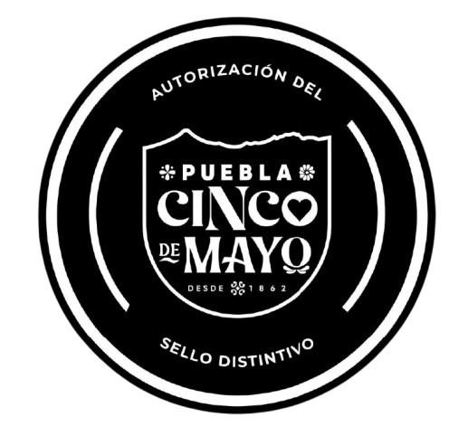

Volver a Soluciones
Nuestra propuesta
A quién servimos, hacia dónde vamos y cómo fortalecemos la industria de Puebla.
Sectores y mercados
Somos industria local de telas con propósito para diversos mercados:
- Emprendedores y marcas de ropa.
- Productores de prendas accesibles al mercado popular.
- Líneas de prendas corporativas alineadas a los ODS.
- Empresas comprometidas en lo social y ambiental, con prendas de menor huella hídrica.
- Marcas que comercializan en Norteamérica.
Nuestros objetivos
- Ser el eslabón textil del mercado nacional de consumo responsable.
- Ser el proveedor local de textiles diferenciados que aportan valor a las marcas hechas en México.
- Generar utilidad financiera para nuestros socios y aliados comerciales.
- Ser el puente de soluciones textiles para emprendedores a ambos lados de la frontera.
Vinculación con valor local
Fortalecemos la manufactura poblana conectando experiencia textil, proveeduría local y desarrollo responsable.
- Impulsamos textiles hechos en Puebla con valor diferenciado.
- Colaboramos con marcas y confeccionistas de la región.
- Convertimos origen, ingeniería y trazabilidad en ventajas comerciales.

Contamos con autorización de uso del distintivo para productos hechos en Puebla.
Certificaciones y T-MEC
Si tu marca busca mercados de más valor en México y los beneficios del T-MEC, somos una plataforma segura para escalar productos certificados. Nuestras telas aportan trazabilidad documentada y cumplimiento RSL, AATCC y ASTM para fibras de origen USMCA.
Ver política de calidad